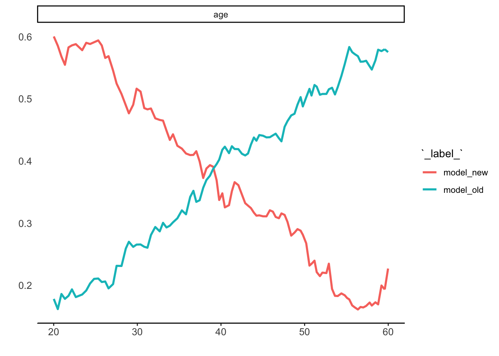
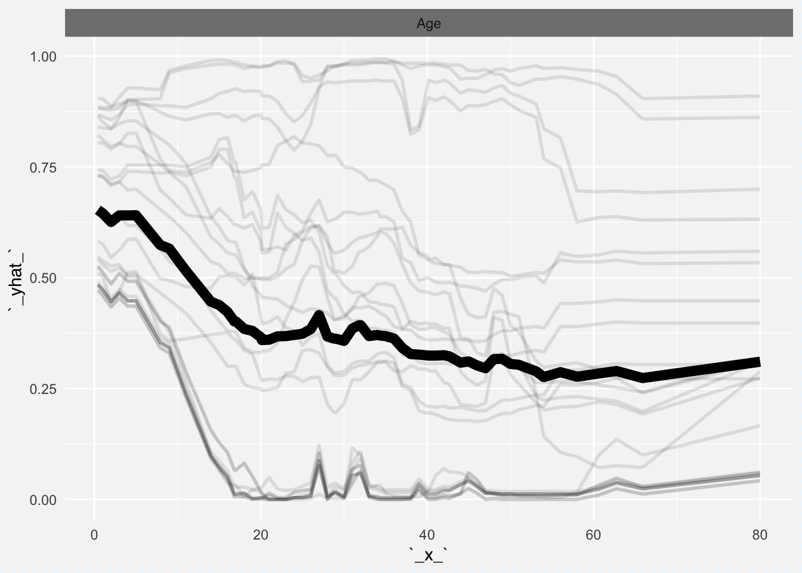
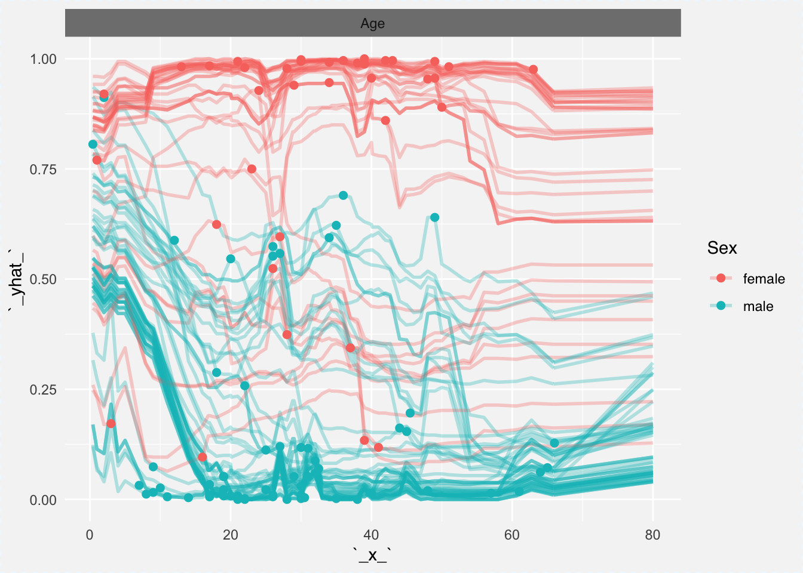
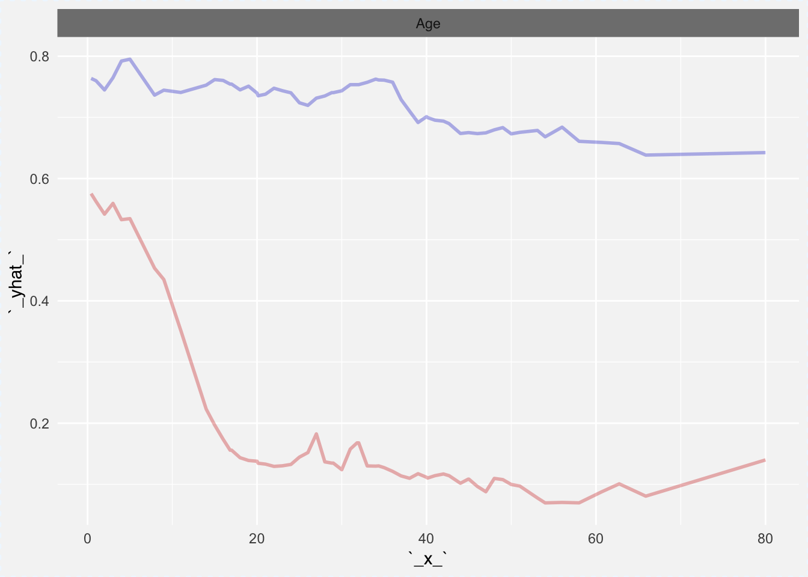
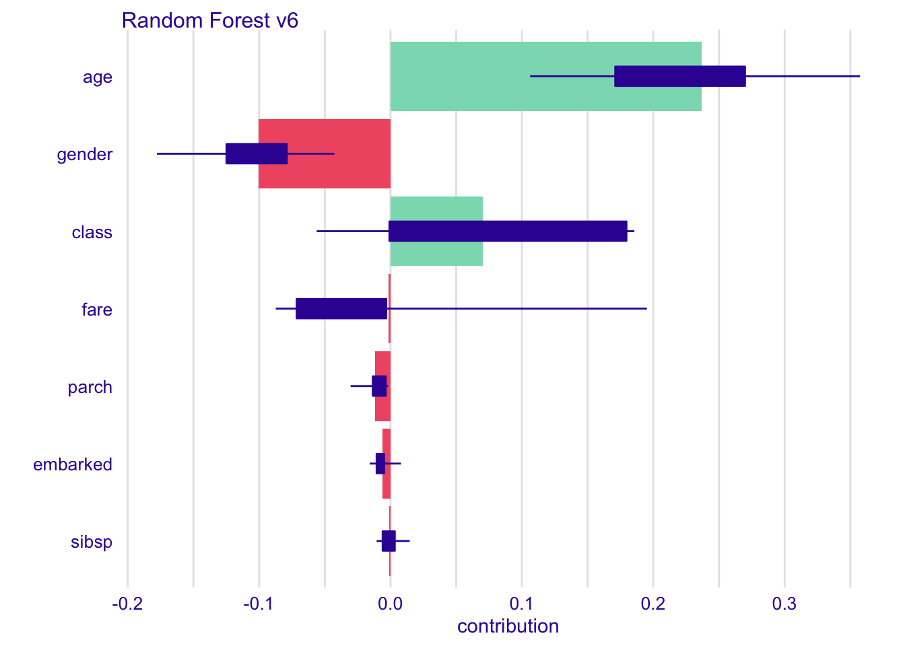
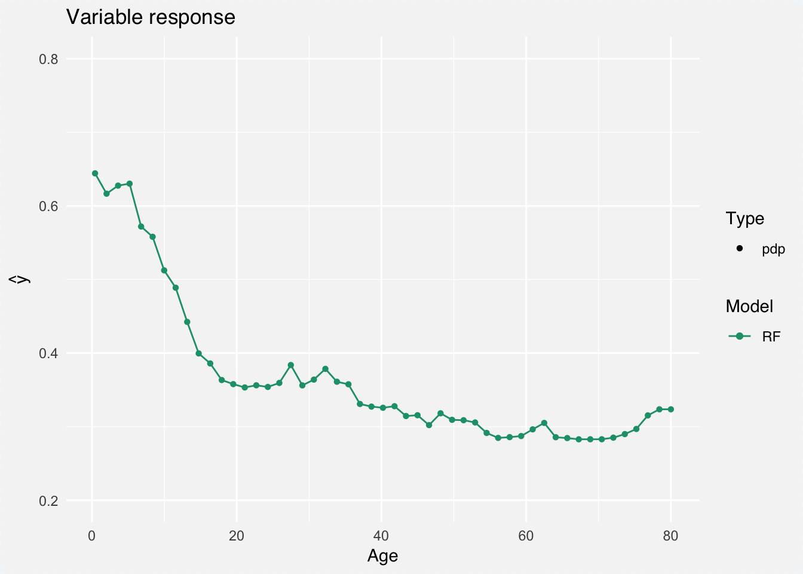
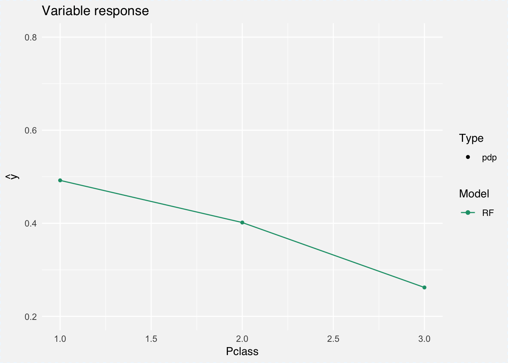
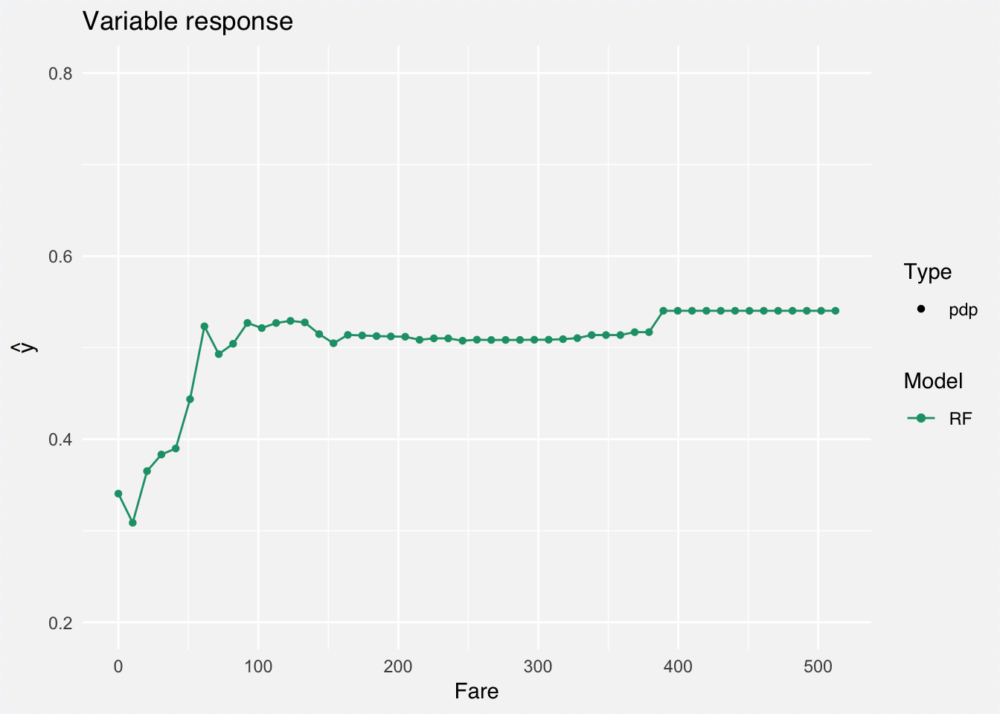
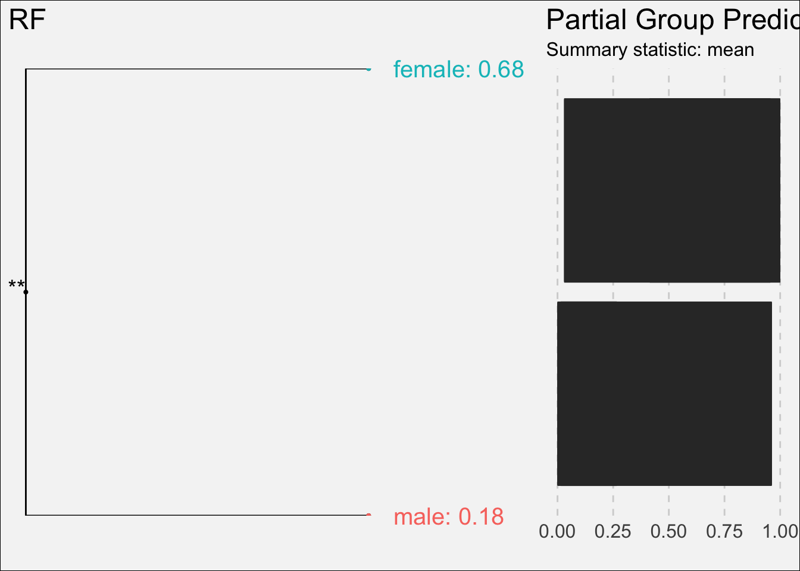

Chapter 13 Marginal Response
Feature extraction
library(titanic)
library(randomForest)
library(DALEX)
library(dplyr)
titanic_small <- titanic_train[,c("Survived", "Pclass", "Sex", "Age", "SibSp", "Parch", "Fare", "Embarked")]
titanic_small$Survived <- factor(titanic_small$Survived)
titanic_small$Sex <- factor(titanic_small$Sex)
titanic_small$Embarked <- factor(titanic_small$Embarked)
titanic_small <- na.omit(titanic_small)
rf_model <- randomForest(Survived ~ Pclass + Sex + Age + SibSp + Parch + Fare + Embarked,
data = titanic_small)
predict_fuction <- function(m,x) predict(m, x, type="prob")[,2]
rf_explain <- explain(rf_model, data = titanic_small,
y = titanic_small$Survived == "1", label = "RF",
predict_function = predict_fuction)13.1 Partial Dependency Plots
\[ g(x_i) = E_{X_i} [f(x^i, x^{-i}, \theta)] \] \[ \hat g(x_i) = \frac 1n \sum_{j=1}^n f(x^i, x^{-i}, \hat\theta) \]
library("ceterisParibus")
cp_25 <- ceteris_paribus(rf_explain,
observations = titanic_small[sample(nrow(titanic_small),25), ],
variables = "Age")
plot(cp_25, show_observations = FALSE)
plot(cp_25, show_observations = FALSE, alpha = 0.1) +
ceteris_paribus_layer(cp_25, show_observations = FALSE, aggregate_profiles = mean, alpha = 1, size = 3)
cp_100 <- ceteris_paribus(rf_explain,
observations = titanic_small[sample(nrow(titanic_small),100), ],
variables = c("Age","Sex"))
plot(cp_100, color = "Sex")
cp_male <- ceteris_paribus(rf_explain,
observations = titanic_small[titanic_small$Sex == "male",],
variables = c("Age", "Sex"))
cp_female <- ceteris_paribus(rf_explain,
observations = titanic_small[titanic_small$Sex == "female",],
variables = c("Age", "Sex"))
plot(cp_male, show_observations = FALSE, aggregate_profiles = mean, color = "red3") +
ceteris_paribus_layer(cp_female, show_observations = FALSE, aggregate_profiles = mean, color="blue3")





(Demšar and Bosnić 2018)
(Greenwell 2017) (Puri et al. 2017)
Accumulated Local Effects (ALE) Plots (Apley 2018)
Interactions - extraction
References
Demšar, Jaka, and Zoran Bosnić. 2018. “Detecting Concept Drift in Data Streams Using Model Explanation.” Expert Systems with Applications 92 (February): 546–59. https://doi.org/10.1016/j.eswa.2017.10.003.
Greenwell, Brandon M. 2017. “pdp: An R Package for Constructing Partial Dependence Plots.” The R Journal 9 (1): 421–36. https://journal.r-project.org/archive/2017/RJ-2017-016/index.html.
Puri, Nikaash, Piyush Gupta, Pratiksha Agarwal, Sukriti Verma, and Balaji Krishnamurthy. 2017. “MAGIX: Model Agnostic Globally Interpretable Explanations.” CoRR abs/1706.07160. http://arxiv.org/abs/1706.07160.
Apley, Dan. 2018. ALEPlot: Accumulated Local Effects (Ale) Plots and Partial Dependence (Pd) Plots. https://CRAN.R-project.org/package=ALEPlot.
Sitko, Agnieszka, Aleksandra Grudziąż, and Przemyslaw Biecek. 2018. FactorMerger: The Merging Path Plot. https://CRAN.R-project.org/package=factorMerger.